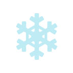

MECÁNICAS
Piedra Sheikah
Herramienta que permite explorar el reino de Hyrule sin límites
Imán
Bombas Remotas
Paralizador
Témpano
Módulos
 |
Permite desplazar objetos metálicos de diferentes formas y tamaños sin esfuerzo alguno
Estas bombas pueden ser detonadas a distancia, lo cual es muy útil para atacar a enemigos o destruir objetos.
 |
Permite inmovilizar objetos durante un corto periodo de tiempo.
|  |
Permite generar bloques de hielo sobre superficies acuáticas.